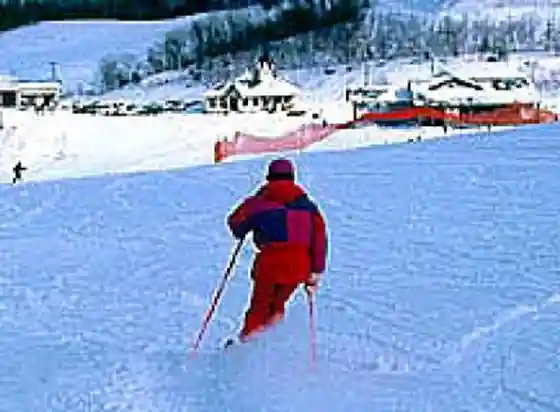
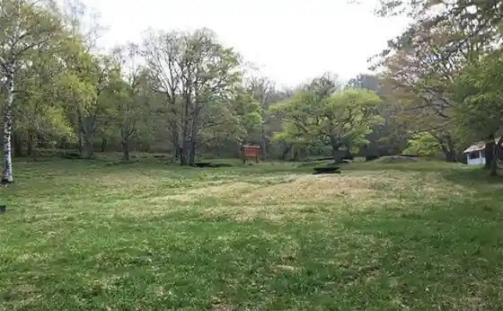
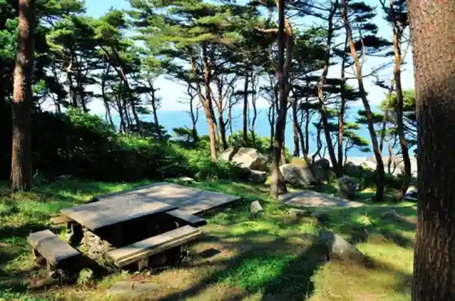

Hiraniwa Kogen Ski Area
Kuji, Iwate · 0194-72-2944 · Official / source link

Hiraniwa Kogen Campground
Kuji, Iwate · 0194-72-2700 · Official / source link

Kita Samurai Hamano Ei Ba
Kuji, Iwate · 0194-58-3855 · Official / source link

Mamebu
Kuji, Iwate · 0194-66-9200 · Official / source link
Sanchoku Shisetsu (Heromachi Sanchoku Kan)
Kuji, Iwate · 0194-72-3880 · Official / source link
Sumi Sumi Kan
Kuji, Iwate · 0194-72-2266 · Official / source link
Yama no Kibudo
Kuji, Iwate · 0120-33-3133 · Official / source link
Meika
Kuji, Iwate · 0194-55-2206 · Official / source link
Jiba Shokuzai Resutoran Sankai Sato (Sankairi)
Kuji, Iwate · 0194-66-9111 · Official / source link
Teuchi Chisoba Oni Ha Nai
Kuji, Iwate · 0194-52-0841 · Official / source link
Ube Sembei Mise
Kuji, Iwate · 0194-75-3100 · Official / source link
Hiraniwa Kogen Shizen Koryu Kan Shirakaba Baths
Kuji, Iwate · 0194-72-2700 · Official / source link
Roadside Station Iwate Kita Sanriku
Kuji, Iwate · 0194-66-8830 · Official / source link
Abe Sembei Mise
Kuji, Iwate · 0194-53-2441 · Official / source link
Ama no Iso Shiru Ichigo Ni
Kuji, Iwate · 0194-53-0025 · Official / source link
Yama Budo Chiizu Ga Ki
Kuji, Iwate · 0194-55-2206 · Official / source link
Funato Beach
Kuji, Iwate · 0194-52-2123 · Official / source link
Fukurai
Kuji, Iwate · 0194-56-2221 · Official / source link
Bisutoro Kun no Ko
Kuji, Iwate · 0194-59-3881 · Official / source link
Hiraniwa Kogen Park Gorufu Ba
Kuji, Iwate · 0194-72-2944 · Official / source link
Kuromame Ga Ki
Kuji, Iwate · 0194-52-3710 · Official / source link
Sanchoku Shisetsu Heromachi Sanchoku Kan
Kuji, Iwate · 0194-72-3880 · Official / source link
Samurai Hama Kaisui Puru
Kuji, Iwate · 0194-58-3855 · Official / source link
Sasaki Sembei Mise
Kuji, Iwate · 0194-53-2740 · Official / source link
Kuji Chikasui Zoku Science Museum
Kuji, Iwate · 0194-75-3551 · Official / source link
Kuji Johoko Ryu Center YOMUNOSU - Yomu no Su
Kuji, Iwate · 0194-52-7777 · Official / source link
Mifune Kyuzo
Kuji, Iwate · 0194-53-2210 · Official / source link
Roadside Station (Kuji) Yamase Tsuchi Kaze Kan
Kuji, Iwate · 0194-66-9200 · Official / source link
Soba no Takumi Kan
Kuji, Iwate · 0194-75-2315 · Official / source link
Kuji Tami Market
Kuji, Iwate · 0194-53-6835 · Official / source link
Tatsumi Yama Park
Kuji, Iwate · 0194-66-9200 · Official / source link
Kohaku to Kuji Kohaku Museum
Kuji, Iwate · 0194-59-3831 · Official / source link
GINTARO Ritoania Kan
Kuji, Iwate · 0194-53-9751 · Official / source link
Suwa Shrine
Kuji, Iwate · 0194-52-2123 · Official / source link
Mifune Ju Dan Memorial Museum
Kuji, Iwate · 0194-53-2210 · Official / source link
Showa no Omoide Museum Retoro Kan
Kuji, Iwate · 0194-52-2289 · Official / source link
Sho Kuji Yaki Togei En
Kuji, Iwate · 0194-52-3880 · Official / source link
Kuji Keiryu
Kuji, Iwate · 0194-52-2123 · Official / source link
Ueyama Kohaku Kogei
Kuji, Iwate · 0194-53-0589 · Official / source link
Battarii Village
Kuji, Iwate · 0194-72-2959 · Official / source link
Roadside Station (Shirakaba no Sato Yamagata)
Kuji, Iwate · 0194-72-3131 · Official / source link
Hiraniwa Highlands
Kuji, Iwate · 0194-66-9200 · Official / source link
Osanai Keiryu
Kuji, Iwate · 0194-52-2123 · Official / source link
Kosode Ama Center (Hokugen no Ama Sumoguri Jitsuen)
Kuji, Iwate · 0194-54-2261 · Official / source link
Tsurigane Hora
Kuji, Iwate · 0194-52-2123 · Official / source link
Nagaizumi Tera no Dai Icho
Kuji, Iwate · 0194-52-2123 · Official / source link
Uchima Ki Hora
Kuji, Iwate · 0194-52-2700 · Official / source link